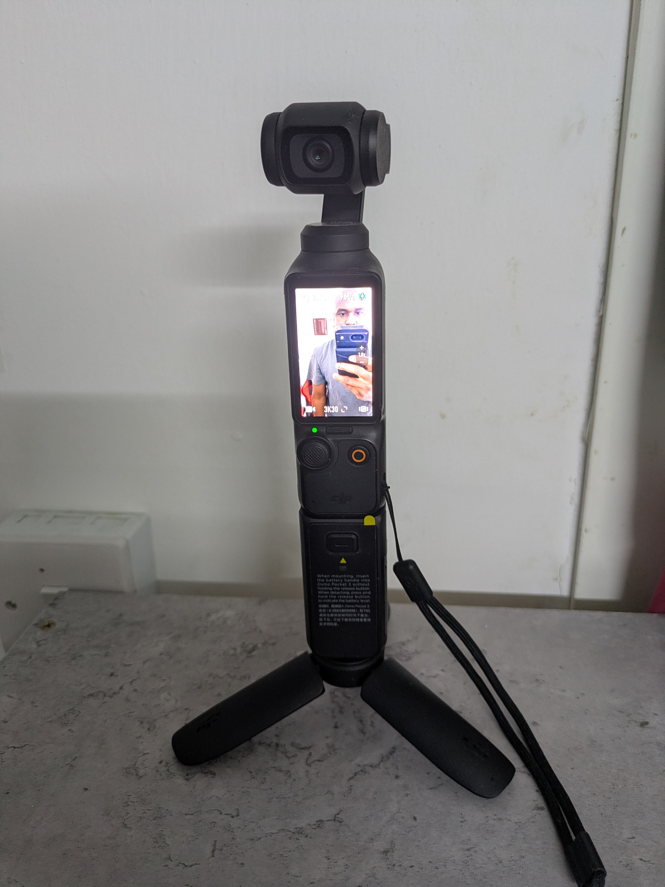

Product Overview

The DJI Osmo Pocket 3 is a pocket-sized camera that helps you shoot steady, high-quality video wherever you go. It features a built-in three-axis stabilizer that smooths out bumpy walking shots, a large sensor for clear video in low light, and a clever two-inch screen that you can twist sideways to film horizontal clips for YouTube or upright for TikTok and Instagram Reels.
Need to see the full list of dimensions and box contents? Check out the full camera details here.
Top Features
- Clear Picture Day and Night: Big camera sensor that captures bright colours and sharp detail even after sunset.
- Spin-to-Start Touchscreen: Simply rotate the screen to switch the camera on and start recording in seconds.
- Super Steady Video: Built-in motorised gimbal keeps the camera steady so your walking videos look smooth and professional.
- Follows Your Face: Smart tracking keeps you centred in the frame while you talk, walk, or cook.
- Fast Battery Charging: Recharges to 80% battery in just 16 minutes using a standard USB-C cable.
Packages & Pricing (ZAR)
| Package Option | What Is in the Box | Price (Rands) | Stock Status |
|---|---|---|---|
| Standard Package | Pocket 3, Protective Cover, Wrist Strap, Handle Grip | R 11,499.00 | In Stock |
| Creator Combo | Standard Kit + Wireless Mic, Extra Battery Grip, Mini Tripod, Bag | R 14,899.00 | Low Stock (Johannesburg Depot) |
| Vlogger Bundle | Creator Combo + Wide-Angle Lens and Filter | R 16,999.00 | Available on Backorder |
Customer Reviews
-
"Night videos look amazing!"
Reviewed by Thabo Molefe
"I took this along to a weekend braai and filmed around the fire. The video was clear, bright, and had zero grain. Worth every cent." -
"The rotating screen is so practical."
Reviewed by Kelebogile Dlamini
"Twisting the screen to jump into vertical video makes filming quick clips for Instagram and TikTok so simple. No complicated settings to fiddle with." -
"Go for the Creator Combo if you want good sound."
Reviewed by Liam van der Merwe
"The clip-on wireless microphone pairs straight to the camera without cables. My voice comes through crisp even in windy weather."